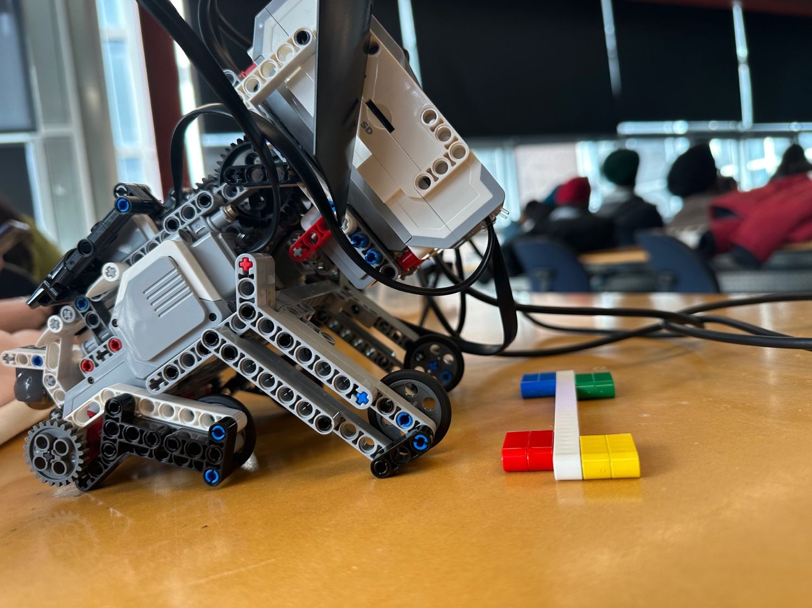
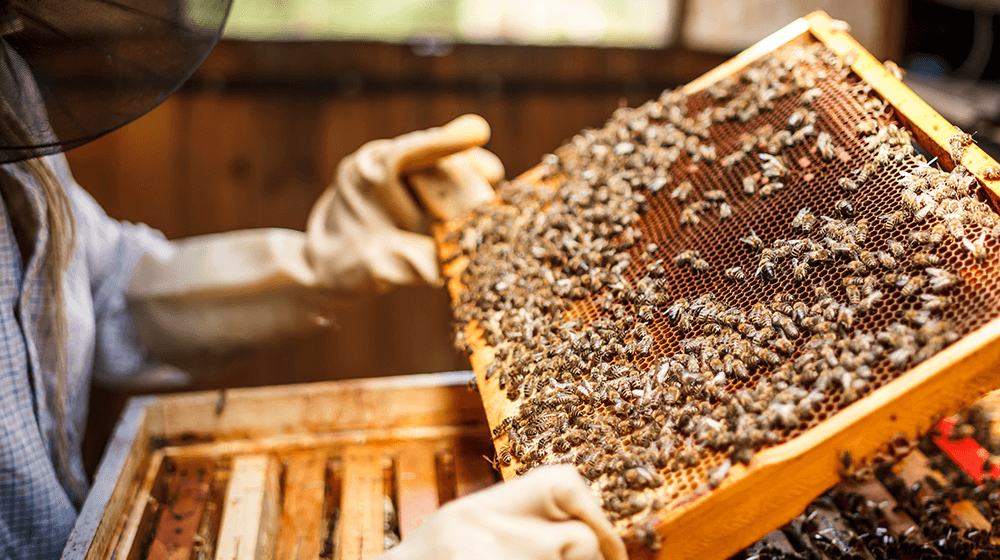

Robot Dog Agile Project
I made a Robot Dog in a group project. This project was regarding agile methodology and using scrum. I and my team of a total of 6 members were able to impress customers by fulfilling all the requirements and needs related to the Robot Dog. In this, I was a product owner and used to communicate with the customer to know about their expectations, define project requirements, Prioritizing tasks, and Collaborate with the development team. Moreover, make the robot work by adding codes to it. The movement was like moving forward and backward, sitting, getting up, barking, and growling. This project improved my technical skills as I learned to add codes to a product. Moreover, I the experience working on Agile projects and managing a project to make a leading team.
Business Design - Ward Honey Beesness
Business Design - Ward Honey Beesness is a project work in which I worked in a team of 4 members. For this, I was a leader, and I managed the whole project and made necessary decisions with the team members acceptance. In this project, I learned to make a business design if the business is new and how they can implement things to grow at a high level and what things need to be managed and how they can be managed, financial needs requirements, and use. Moreover, I had to think about ideas related to technology or software. Thus, we presented to make an app as the app can help in sales, and promotions and could know the demand for the specific flavor of honey. This helped me in improving my soft skills and technical skills as in I did research a lot regarding app dependent and worked in a team.